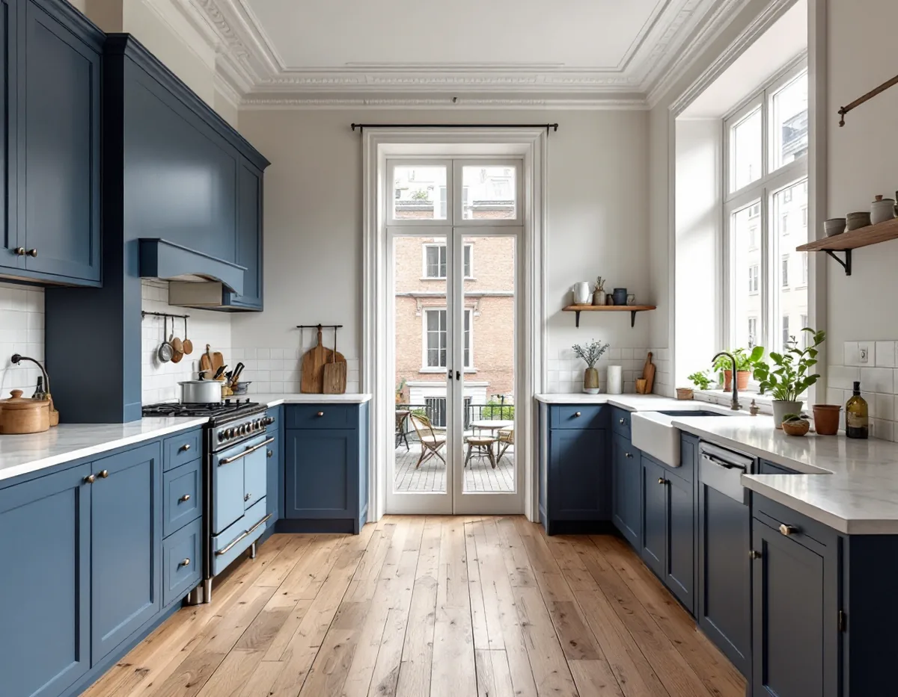
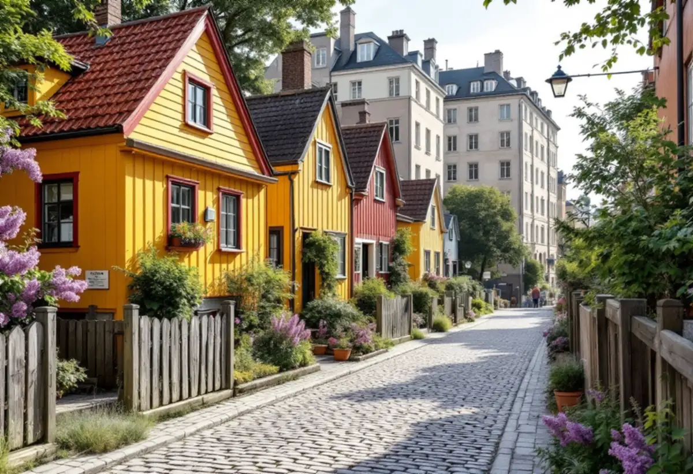

Platsbesök
Vi mäter kök eller kokvrå och ser var stam, kanal, gasledning och el finns.
Nästan alla Södermalms omkring 77 500 bostäder ligger i flerbostadshus, och mer än hälften är bostadsrätter. Köket kan vara en kokvrå i en etta, en gasspis på stadsgasnätet eller ett kök i ett hus med kulturvärden. Geal Entreprenad AB bygger om kök i lägenheter på hela Södermalm, med gratis platsbesök, skriftligt kostnadsförslag och ROT-avdraget direkt på fakturan.

Stadens områdesfakta för 2025 räknar 73 952 bostäder i flerbostadshus på Södermalm. Av dem redovisas 7 856 som lägenheter utan kök och 17 165 som ettor med kök. De små lägenheterna är alltså många, och i dem handlar en köksrenovering om att få plats med mer på liten yta.
I lägenhetsregistret är ett kök ett utrymme för matlagning med en golvyta på minst sju kvadratmeter, bänkar och skåp inräknade, och med direkt eller indirekt dagsljus. Ett mindre utrymme där en person ändå kan vistas räknas som kokvrå, och ett kokskåp är inredning för matlagning med vatten, avlopp och kylskåp. En kokvrå med matrum räknas som kök om utrymmena tillsammans är minst sju kvadratmeter och har dagsljus.
Ska kokvrån bli ett kök genom att en vägg flyttas krävs styrelsens tillstånd om väggen är bärande eller om rör och ventilation berörs. Stockholms stad påpekar att ventilationskanalens sammanlagda mått ska räcka om badrumskanalen ska användas som kombinerad imkanal för köket och frånluftskanal för badrummet, och att ett kök behöver tillräcklig frånluft.

I Stockholm finns ett stadsgasnät, där gasen är en blandning av metan och luft. Nätbolaget, som sedan juni 2026 heter Driva Gasnät, skriver att den som byter gasspis först måste ta reda på vilket nät lägenheten är ansluten till. På stadsgasnätet ska spisen vara godkänd för stadsgas med beteckningen 1a eller 1e och ha dysor märkta G110 eller G150.1. I Hammarby sjöstad levereras i stället biogas i fordonsgasnätet, och där ska spisen vara anpassad för naturgas eller biogas med beteckningen 2H.
Enligt nätbolaget får arbeten på gasnätet, både byte och bortkoppling av en gasapparat, bara göras av gasinstallatörer som är godkända för det, och en förteckning över dem finns hos Energigas Sverige. Energigas Sveriges anvisningar för hushållsapparater, framtagna tillsammans med bland andra Gasnätet Stockholm, säger att allt installationsarbete kräver föranmälan eller efteranmälan till nätbolaget och att apparater tillverkade efter den 1 januari 1996 ska vara CE-märkta för den aktuella gasen.
Gasledningen är också en föreningsfråga, eftersom bostadsrättslagen kräver styrelsens tillstånd för att installera eller ändra ledningar för gas. Ska gasspisen bort helt samordnar vi bortkopplingen med gasinstallatören och anslutningen av den nya spisen med elföretaget. Boverket nämner dessutom gasspisar bland de produkter där asbest kan förekomma, så en gammal spis hanteras varsamt vid rivningen.
Bostadsrättslagen har en regel som är särskilt relevant i innerstaden. För en lägenhet med särskilda historiska, kulturhistoriska, miljömässiga eller konstnärliga värden krävs styrelsens tillstånd för varje åtgärd som påverkar ett sådant värde. Lagen kräver också tillstånd för installation eller ändring av eldstad eller rökkanal, vilket berör den som har en kakelugn eller en gammal spisanordning i köket.
Stockholms stad skriver att hänsyn till byggnadens kulturhistoriska värden ska tas vid alla ändringar, även när ett kök flyttas inomhus. Stadsmuseets klassificeringskarta ger en första indikation. Riksintressen för kulturmiljövården är markerade med blå ring, områden som översiktsplanen pekar ut som särskilt kulturhistoriskt värdefulla med grön ring, och för blå- eller grönmarkerade byggnader krävs bygglov för åtgärder som annars är lovfria. Museet brukar svara inom tre veckor när det har fått de uppgifter det ber om.
Skatteverket godtar rotavdrag i en bostadsrätt för att mura och reparera öppen spis och kakelugn, så en kakelugn som ska stå kvar i köket kan lagas i samma veva. Mer om snickerier och listverk i lägenheten finns hos snickare på Södermalm.
Bara 211 av bostäderna i stadsdelsområdet ligger i småhus, enligt områdesfakta. Översiktsplanens redovisning av riksintresset pekar ut Fjällgatan, Katarinaberget, Vita bergen, Åsöberget och Östra Mariaberget som värdekärnor för den tidiga bebyggelsen på malmarna. Av den perioden återstår omkring 300 hus, de flesta på Södermalm.
Redovisningen påpekar att de flesta äldre byggnaderna har byggts om och till under århundradena, så att det är svårt att tala om ett originalutförande. Den småskaliga bebyggelsen, trädgårdarna och detaljer som fönster och entréportar räknas till det som ger miljön dess karaktär. I ett sådant hus planerar vi köket så att fönster och fasad lämnas orörda, och ändringar som syns utifrån stäms av med staden först. Mer om planering finns på sidan om köksrenovering.
Vi mäter kök eller kokvrå och ser var stam, kanal, gasledning och el finns.
Du får en beskrivning av arbetet och av vilka som gör el, VVS och gas.
Rivning, installationer, snickeri och montering redovisas var för sig.
Trapphuset skyddas och gamla skåp och vitvaror bärs ut.
Rör, el och fläkt dras och den nya inredningen monteras.
Spis, fläkt och blandare provas och vi går igenom köket med dig.
I en bostadsrätt räknar Skatteverket bland annat att dra vatten- och avloppsledningar inne i lägenheten, att montera fast köksinredning och installera vitvaror i samband med byggarbetet, att byta köksluckor och att installera inbyggda spotlights.
Avdraget är 30 procent av arbetskostnaden, högst 50 000 kr per person och år och högst 75 000 kr tillsammans med rutavdrag. Arbetet ska ingå i ditt underhållsansvar enligt stadgarna. Material ger inget avdrag, och Geal drar avdraget direkt på fakturan.
Att göra om en kokvrå till kök är ett större jobb än att byta inredning på samma plats, särskilt om en vägg flyttas. En gasspis som ska bytas eller kopplas bort lägger till gasinstallatörens arbete. Trapphus, hiss och möjligheten att ställa en container på gatan påverkar hur rivning och leveranser går till. Efter ett gratis platsbesök får du ett skriftligt kostnadsförslag.
Planering, el, VVS, fläkt och väggar.
Köksrenovering i Stockholm →Takbyte, takbesiktning och plåtarbeten.
Takläggare på Södermalm →Stenstad, storgårdskvarter och bergen.
Takrenovering på Södermalm →Vattenskador, ansvar och husens olika åldrar.
Badrumsrenovering på Södermalm →Inreda vinden till bostäder.
Byggföretag på Södermalm →Putsen mot gatan.
Fasadmålning på Södermalm →Kalkputs, kalkfärg och plåt på lister.
Fasadrenovering på Södermalm →Föreningar, gatufasad och gårdsfasad.
Fönsterbyte på Södermalm →Föreningens fönster, besiktigade före beslut.
Fönsterrenovering på Södermalm →Renovera, riva och sortera golvet.
Golvläggare på Södermalm →Slipa golven i den nyköpta lägenheten.
Golvslipning på Södermalm →Äldre färglager, bättring och provytor.
Målare på Södermalm →Takkupor, vindar och äldre tak.
Plåtslagare på Södermalm →Väggar, dörrar och förvaring i lägenhet.
Snickare på Södermalm →Ny tapet och gamla tapetlager.
Tapetsering på Södermalm →Lägenheten i takt med stambytet.
Totalrenovering på Södermalm →